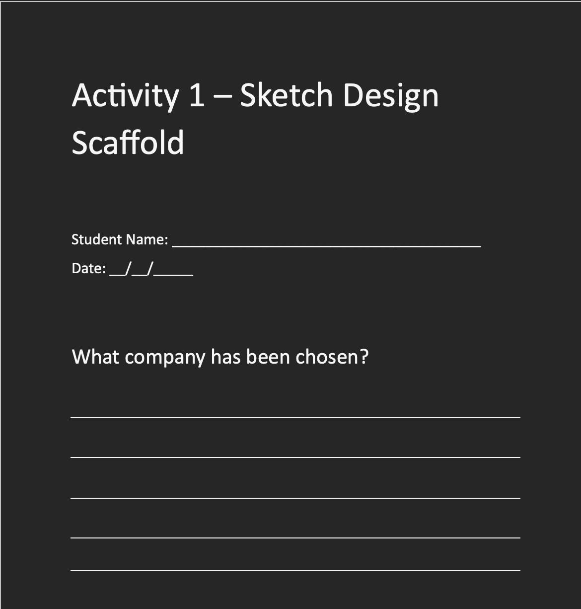

Resources
First Resource Link
Refer students to the above link for the top Australian technology companies
Second Resource Link
Refer students to the above link for the global Top 10 Technology companies
Students will use the below scaffold to fill out their group form and ideas
AITSL Standards:
Standard 6.4 Apply professional learning and improve student learning: This standard is to ensure that as a teacher, we constantly seek ways to further improve our content that students engage in, whether this be updating content to be more modernised, and or taking feedback from students to improve flaws with the content.
Standard 3.4 Select and use resources: This standard is used to uphold quality resources chosen for students to create interesting designs for their products.